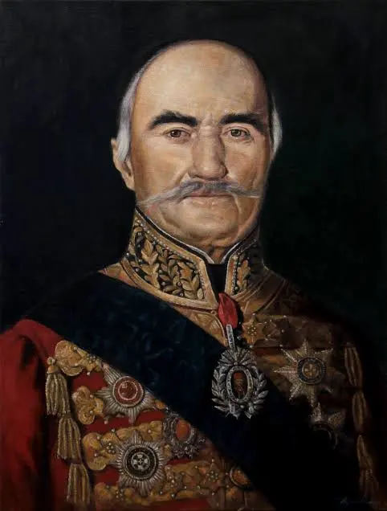
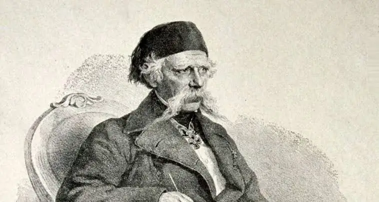
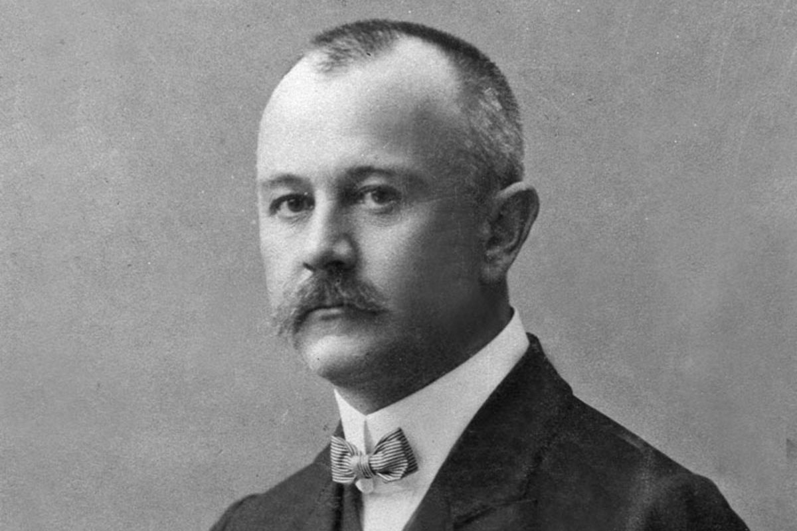
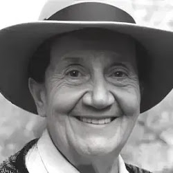
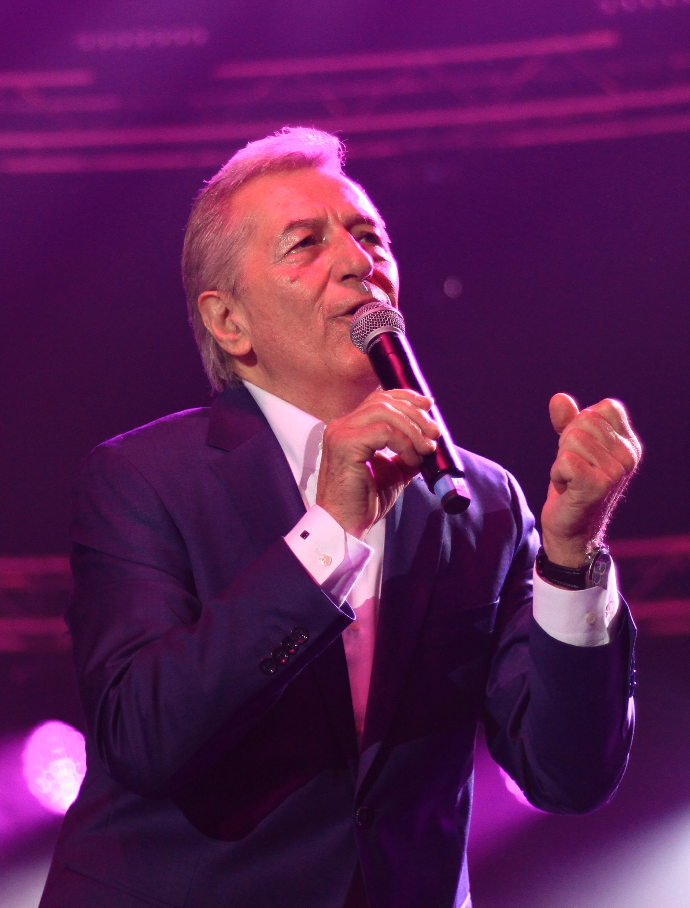

Милош Обреновић
Вођа Другог српског устанка
Милош Обреновић био је један од најзначајнијих српских државника и вођа Другог српског устанка 1815. године. Његовом политиком Србија је стекла широку аутономију у оквиру Османског царства. Оснивач је династије Обреновић и сматра се једним од утемељивача модерне српске државе.

Вук Караџић
Реформатор српског језика и писма
Вук Стефановић Караџић извршио је реформу српског језика и азбуке. Његово правило „Пиши као што говориш, читај како је написано“ постало је основ савременог српског језика. Сакупљао је народне песме, приче и обичаје, чувајући тако националну културну баштину.

Јован Цвијић
Географ и научник
Јован Цвијић био је чувени географ, геолог и етнолог. Истраживао је Балканско полуострво и објавио бројне научне радове који су стекли међународно признање. Био је ректор Београдског универзитета и председник Српске краљевске академије.

Милош Теодосић
Кошаркаш
Милош Теодосић је један од најуспешнијих српских кошаркаша. Познат је по својим прецизним додавањима, изузетном прегледу игре и лидерским способностима. Освајао је бројне медаље са репрезентацијом Србије и наступао за велике европске клубове, као и у НБА лиги.

Десанка Максимовић
Песникиња
Десанка Максимовић је једна од највољенијих српских песникиња. Њена поезија одише љубављу, родољубљем и хуманошћу. Посебно је позната по песми „Крвава бајка“, посвећеној страдању ученика у Крагујевцу током Другог светског рата.

Мирослав Илић
Народни певач
Мирослав Илић је један од најпознатијих певача народне музике на Балкану. Током дуге и успешне каријере снимио је велики број хитова који се и данас слушају. Његов препознатљив глас и песме учинили су га једним од симбола српске народне музике.